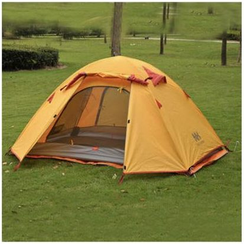
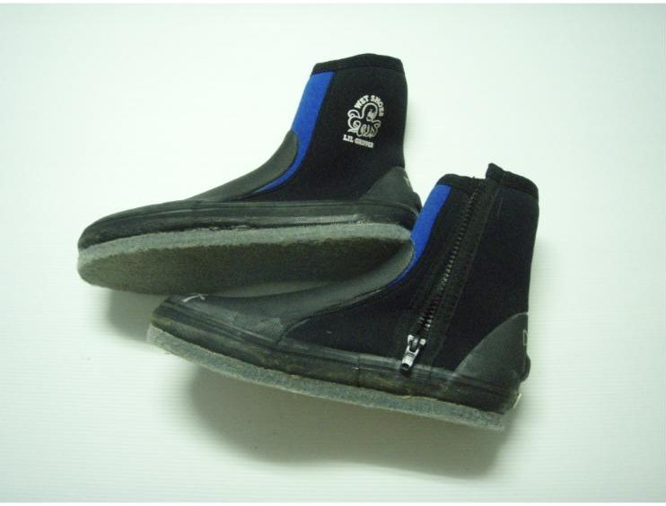
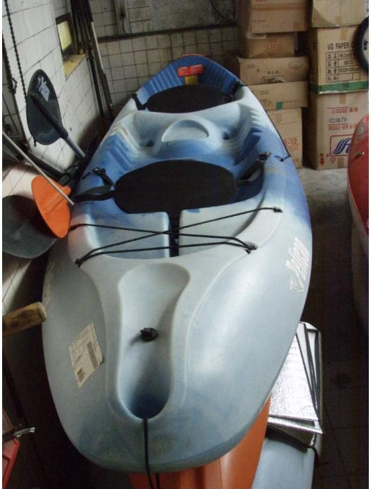

北投戶外裝備出租Outdoor gear rental in Beitou
露營、登山、溯溪、水上裝備。電話預約，到店取還。Camping, hiking, river-tracing and water gear. Book by phone, pick up in store.




如何租借How to rent
打電話預約Call to reserve
告訴我們日期和需要的裝備，我們幫你留。Tell us the dates and what you need; we hold it for you.
到店取件Pick up in store
捷運唭哩岸站步行 4 分鐘。鞋子、防寒衣可現場試穿。4 minutes on foot from MRT Qilian. Try on shoes and wetsuits in the shop.
歸還Return
營業時間內送回店裡。Return to the shop during opening hours.
營業時間Opening hours
- 週一、二、四、五Mon, Tue, Thu, Fri
- 10:00–20:00
- 週六Saturday
- 10:00–15:00
- 國定假日Public holidays
- 10:00–19:00
- 週三、週日Wednesday & Sunday
- 公休Closed
店面位置Location
台北市北投區東華街二段210號No. 210, Sec. 2, Donghua St, Beitou District, Taipei
捷運淡水信義線 唭哩岸站，步行約 4 分鐘MRT Red Line, Qilian station, about 4 minutes on foot
租借規則Rental policy
租借前先知道的事。每一項的內容都要和老闆確認後才會放上來。What to know before you rent. Each item below is written once confirmed with the owner.
押金Deposit
內容待與老闆確認。To be confirmed with the owner.
證件ID
內容待與老闆確認。To be confirmed with the owner.
歸還時間Return time
內容待與老闆確認。To be confirmed with the owner.
損壞與遺失Damage and loss
內容待與老闆確認。To be confirmed with the owner.
清潔Cleaning
內容待與老闆確認。To be confirmed with the owner.
逾期Late return
內容待與老闆確認。To be confirmed with the owner.
聯絡我們Contact
租八借
台北市北投區東華街二段210號No. 210, Sec. 2, Donghua St, Beitou District, Taipei
捷運淡水信義線 唭哩岸站，步行約 4 分鐘MRT Red Line, Qilian station, about 4 minutes on foot
電話Tel 02-2823-0080
傳真Fax 02-2821-0278
Email suntreeyang@gmail.com
營業時間Opening hours
- 週一、二、四、五Mon, Tue, Thu, Fri
- 10:00–20:00
- 週六Saturday
- 10:00–15:00
- 國定假日Public holidays
- 10:00–19:00
- 週三、週日Wednesday & Sunday
- 公休Closed